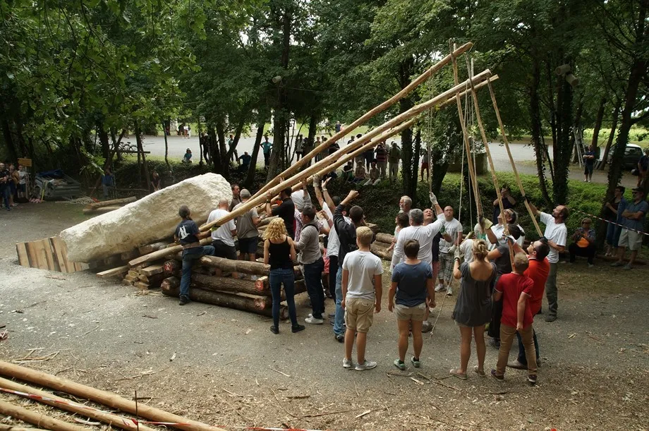
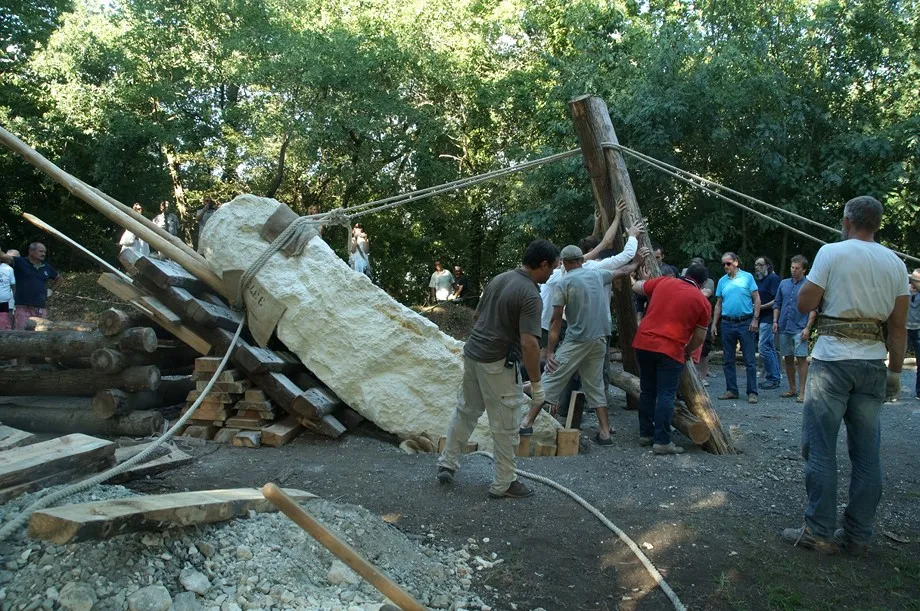

Le mégalithisme
Vivre un chantier de construction collectif
Déplacez et levez un menhir de plusieurs tonnes avec des techniques ayant pu être utilisées au Néolithique.
- Propositions pédagogiques :
- Présentation d'outils pour le travail du sol et démonstration de creusement de la fosse de calage du menhir.
- Atelier participatif de creusement de la fosse de calage du menhir.
- Atelier participatif de déplacement du menhir à l’aide de cordes et de rouleaux.
- Atelier participatif de levage du menhir avec ou sans le recours à un chevalet en bois.
La priorité est, bien évidemment, donnée à la sécurité des participants.
Déplacement & levage d'un menhir de 12 tonnes
Site de la pierre de Crazannes (Charente-Maritime)





- Personne ressource :
- Bertrand Poissonnier : - Archéologue Responsable de Recherches Archéologiques à l’INRAP - UMR 5608 TRACES du CNRS, Université Jean Jaurès, Toulouse.
Spécialiste des techniques du mégalithisme, il a développé des expérimentations innovantes (premiers dolmens construits ex nihilo depuis la Préhistoire, en France et en Belgique, déplacement d’un bloc de 32 tonnes à l’aide d'une vingtaine de personnes, etc.), mais aussi des restaurations mégalithiques pour le compte de l’UNESCO.